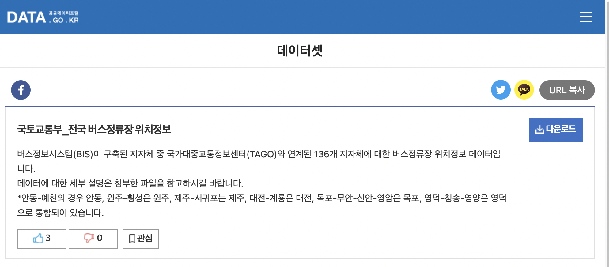
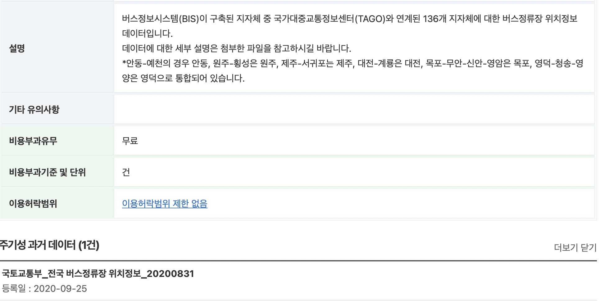

<!DOCTYPE html>
<html class="writer-html5" lang="en" >
<head>
    <meta charset="utf-8" />
    <meta http-equiv="X-UA-Compatible" content="IE=edge" />
    <meta name="viewport" content="width=device-width, initial-scale=1.0" />
      <link rel="shortcut icon" href="../../img/favicon.ico" />
    <title>버스정류장 - NCC Airhealth DB</title>
    <link rel="stylesheet" href="../../css/theme.css" />
    <link rel="stylesheet" href="../../css/theme_extra.css" />
        <link rel="stylesheet" href="https://cdnjs.cloudflare.com/ajax/libs/highlight.js/10.5.0/styles/github.min.css" />
    
      <script>
        // Current page data
        var mkdocs_page_name = "\ubc84\uc2a4\uc815\ub958\uc7a5";
        var mkdocs_page_input_path = "variables/bus/index.md";
        var mkdocs_page_url = null;
      </script>
    
    <script src="../../js/jquery-3.6.0.min.js" defer></script>
    <!--[if lt IE 9]>
      <script src="../../js/html5shiv.min.js"></script>
    <![endif]-->
      <script src="https://cdnjs.cloudflare.com/ajax/libs/highlight.js/10.5.0/highlight.min.js"></script>
      <script>hljs.initHighlightingOnLoad();</script> 
</head>

<body class="wy-body-for-nav" role="document">

  <div class="wy-grid-for-nav">
    <nav data-toggle="wy-nav-shift" class="wy-nav-side stickynav">
    <div class="wy-side-scroll">
      <div class="wy-side-nav-search">
          <a href="../.." class="icon icon-home"> NCC Airhealth DB
        </a><div role="search">
  <form id ="rtd-search-form" class="wy-form" action="../../search.html" method="get">
      <input type="text" name="q" placeholder="Search docs" title="Type search term here" />
  </form>
</div>
      </div>

      <div class="wy-menu wy-menu-vertical" data-spy="affix" role="navigation" aria-label="Navigation menu">
              <ul>
                <li class="toctree-l1"><a class="reference internal" href="../..">Home</a>
                </li>
              </ul>
              <ul>
                <li class="toctree-l1"><a class="reference internal" href="../../about/">About</a>
                </li>
              </ul>
              <p class="caption"><span class="caption-text">Variables</span></p>
              <ul class="current">
                  <li class="toctree-l1 current"><a class="reference internal current" href="./">버스정류장</a>
    <ul class="current">
    <li class="toctree-l2"><a class="reference internal" href="#_2">현재 원천 데이터 변수 정의서</a>
    </li>
    <li class="toctree-l2"><a class="reference internal" href="#_3">현재 원천 데이터 획득 및 전처리 과정</a>
        <ul>
    <li class="toctree-l3"><a class="reference internal" href="#_4">현재 데이터 소개</a>
    </li>
    <li class="toctree-l3"><a class="reference internal" href="#_5">현재 원천 데이터 획득 방법</a>
    </li>
    <li class="toctree-l3"><a class="reference internal" href="#_6">과거 원천 데이터와의 차이점</a>
    </li>
    <li class="toctree-l3"><a class="reference internal" href="#_7">정제 방법 및 소스코드</a>
    </li>
        </ul>
    </li>
    <li class="toctree-l2"><a class="reference internal" href="#_8">저희 데이터 베이스에 들어갈 인풋 변수 정의서</a>
    </li>
    </ul>
                  </li>
              </ul>
      </div>
    </div>
    </nav>

    <section data-toggle="wy-nav-shift" class="wy-nav-content-wrap">
      <nav class="wy-nav-top" role="navigation" aria-label="Mobile navigation menu">
          <i data-toggle="wy-nav-top" class="fa fa-bars"></i>
          <a href="../..">NCC Airhealth DB</a>
        
      </nav>
      <div class="wy-nav-content">
        <div class="rst-content"><div role="navigation" aria-label="breadcrumbs navigation">
  <ul class="wy-breadcrumbs">
    <li><a href="../.." class="icon icon-home" alt="Docs"></a> &raquo;</li>
          <li>Variables &raquo;</li><li>버스정류장</li>
    <li class="wy-breadcrumbs-aside">
    </li>
  </ul>
  <hr/>
</div>

          <div role="main" class="document" itemscope="itemscope" itemtype="http://schema.org/Article">
            <div class="section" itemprop="articleBody">
              
                <h1 id="_1">버스정류장 정보</h1>
<p>최소 시간해상도: annual
DataID: 00d3a4539ae94cfa8756b158cae296fc
URL: https://www.data.go.kr/data/15067528/fileData.do
공간범위: 전국
담당자: Dongook ‍Son
데이터 상세: 버스정보시스템(BIS)이 구축된 지자체 중 국가대중교통정보센터(TAGO)와 연계된 136개 지자체에 대한 버스정류장 위치정보 데이터
데이터 제공처(기관/시스템): 국가대중교통정보센터(TAGO), 국토교통부
데이터 파일명: 국토교통부_전국 버스정류장 위치정보_20210916.zip
데이터 형식: csv
데이터 획득방법: Manual Download
마지막 업데이트: April 28, 2022 2:14 PM
시간범위: 2020-
원천데이터 관련 정보: https://www.notion.so/2007141c531f4b759cba52d6f44c5b3f
종류: 이동수단
최소 공간해상도: point
최종 선정: No
최종 수정자: Dongook ‍Son</p>
<h2 id="_2">현재 원천 데이터 변수 정의서</h2>
<table>
<thead>
<tr>
<th>변수명</th>
<th>변수타입</th>
<th>변수 설명</th>
<th>데이터 샘플</th>
</tr>
</thead>
<tbody>
<tr>
<td>NODE_ID</td>
<td>STRING</td>
<td>버스 정류소 고유 ID</td>
<td>TSB252000435</td>
</tr>
<tr>
<td>NODE_NM</td>
<td>STRING</td>
<td>정류소 명칭</td>
<td>송림2리경로당</td>
</tr>
<tr>
<td>ADMIN_NM</td>
<td>STRING</td>
<td>시군구 이름</td>
<td>강릉시</td>
</tr>
<tr>
<td>NODE_TP</td>
<td>STRING</td>
<td>정류소 유형</td>
<td>1</td>
</tr>
<tr>
<td>CENTER_YN</td>
<td>BOOLEAN</td>
<td>중앙차로 여부(Y/N)</td>
<td>N</td>
</tr>
<tr>
<td>NODE_ENM</td>
<td>STRING</td>
<td>노드 영문명</td>
<td>Dongyangsimenteuipgu</td>
</tr>
<tr>
<td>GPS_LONG</td>
<td>NUMBER</td>
<td>GPS 경도</td>
<td>128.794026</td>
</tr>
<tr>
<td>GPS_LATI</td>
<td>NUMBER</td>
<td>GPS 위도</td>
<td>37.852718</td>
</tr>
<tr>
<td>COLLECTD_TIME</td>
<td>DATETIME</td>
<td>정보수집일시</td>
<td>2020-09-24 04:00:04</td>
</tr>
<tr>
<td>CITY_CD</td>
<td>STRING</td>
<td>도시코드</td>
<td>252</td>
</tr>
<tr>
<td>CITY_NAME</td>
<td>STRING</td>
<td>도시명</td>
<td>강릉시</td>
</tr>
</tbody>
</table>
<h2 id="_3">현재 원천 데이터 획득 및 전처리 과정</h2>
<h3 id="_4">현재 데이터 소개</h3>
<p>버스 정류소 근처에서 대기 오염 물질이 더 많이 관측된다(<strong>근거 필요</strong>). 따라서 어떤 지점(좌표)의 대기 오염 정도를 파악하거나 추정할 때 근방(일정 반경 이내)의 버스 정류소 수, 각 버스 정류소를 거치는 노선 수 등 정보가 필요하다. 따라서 해당 데이터를 획득해야한다.</p>
<h3 id="_5">현재 원천 데이터 획득 방법</h3>
<p>공공데이터포털에서 국토교통부 전국 버스정류장 위치정보를 획득할 수 있다. 해당 데이터는 버스정보시스템(BIS)이 구축된 지자체 중 국가대중교통정보센터(TAGO)와 연계된 136개 지자체에 대한 버스정류장 위치정보 데이터다.</p>
<p>현재 데이터는 2020년도, 2021년도 기준 두 개의 시점에 대해 있는데, 2021년에는 2020년의 칼럼을 바탕으로 추가적인 칼럼들이 생겼다. 따라서 해당 문서에서는 2020년 기준 테이블 형식을 기준으로한다. </p>
<h3 id="_6">과거 원천 데이터와의 차이점</h3>
<p>이전에는 KTDB에서 Shape 파일을 직접 다운로드하였다. 그리고 모두 ArcGIS 에서 전처리를 수작업으로 해야했었다. 그러나 공공데이터 포털에서 해당 데이터가 공개되면서 규격이 관리되기 때문에 이를 더 쉽게 관리할 수 있게 되었다.</p>
<p></p>
<p>매년 업데이트되는 자료는 아래 사진과 같이 주기성 과거 데이터로 버전이 유지된다.</p>
<p></p>
<h3 id="_7">정제 방법 및 소스코드</h3>
<p>위의 원천 데이터 변수 정의서에서 알 수 있듯 좌표 데이터는 위도와 경도가 각각 숫자형 자료로 제공된다. PostGIS 데이터베이스에 저장하기 위해서 해당 정보를 <code>POINT(GPS_LONG, GPS_LAT)</code>의 점 형태로 변환하여  <code>geometry</code>에 저장한다. <code>year</code> 칼럼은 정보수집일시의 연도를 바탕으로 가져오면 된다. </p>
<h2 id="_8">저희 데이터 베이스에 들어갈 인풋 변수 정의서</h2>
<table>
<thead>
<tr>
<th>변수명</th>
<th>변수타입</th>
</tr>
</thead>
<tbody>
<tr>
<td>id</td>
<td>STRING</td>
</tr>
<tr>
<td>ko_nm</td>
<td>STRING</td>
</tr>
<tr>
<td>type</td>
<td>STRING</td>
</tr>
<tr>
<td>is_center</td>
<td>BOOLEAN</td>
</tr>
<tr>
<td>name</td>
<td>STRING</td>
</tr>
<tr>
<td>geometry</td>
<td>GEOMETRY</td>
</tr>
<tr>
<td>year</td>
<td>NUMBER</td>
</tr>
<tr>
<td>record_time</td>
<td>DATETIME</td>
</tr>
<tr>
<td>city_cd</td>
<td>STRING</td>
</tr>
<tr>
<td>city_nm</td>
<td>STRING</td>
</tr>
</tbody>
</table>
              
            </div>
          </div><footer>
    <div class="rst-footer-buttons" role="navigation" aria-label="Footer Navigation">
        <a href="../../about/" class="btn btn-neutral float-left" title="About"><span class="icon icon-circle-arrow-left"></span> Previous</a>
    </div>

  <hr/>

  <div role="contentinfo">
    <!-- Copyright etc -->
  </div>

  Built with <a href="https://www.mkdocs.org/">MkDocs</a> using a <a href="https://github.com/readthedocs/sphinx_rtd_theme">theme</a> provided by <a href="https://readthedocs.org">Read the Docs</a>.
</footer>
          
        </div>
      </div>

    </section>

  </div>

  <div class="rst-versions" role="note" aria-label="Versions">
  <span class="rst-current-version" data-toggle="rst-current-version">
    
    
      <span><a href="../../about/" style="color: #fcfcfc">&laquo; Previous</a></span>
    
    
  </span>
</div>
    <script>var base_url = '../..';</script>
    <script src="../../js/theme_extra.js" defer></script>
    <script src="../../js/theme.js" defer></script>
      <script src="../../search/main.js" defer></script>
    <script defer>
        window.onload = function () {
            SphinxRtdTheme.Navigation.enable(true);
        };
    </script>

</body>
</html>
